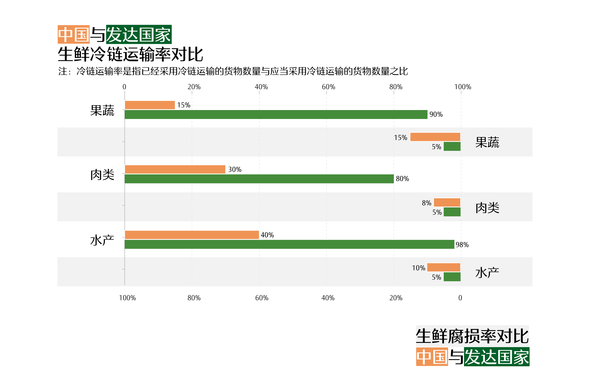
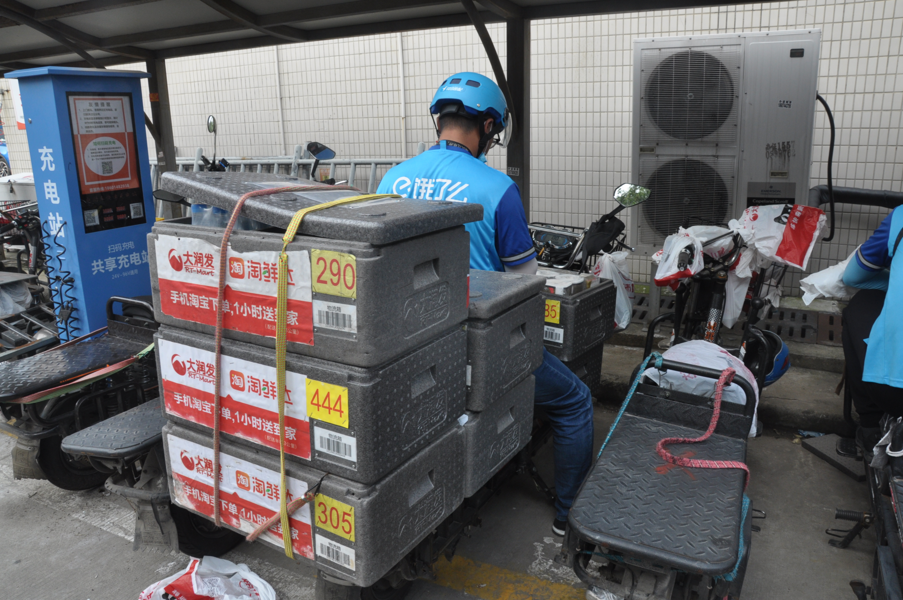
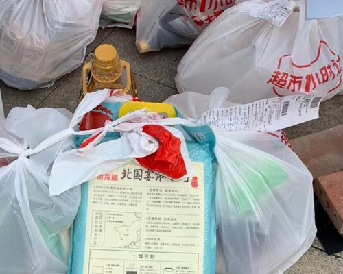

6月12号，北京最大农产品批发市场新发地出现新冠阳性患者，引发一波“抢菜”大潮：多个生鲜电商APP上的生鲜产品被抢购一空，还有网友晒出超市空荡荡的菜架照片。

网友晒出的空荡荡的菜架 @coco家的王小黄
“抢菜”对于刚刚经历过居家抗疫的人来说并不陌生。漫长的疫情期间，千万家庭“被迫”成为了线上买菜的新用户，抢购便宜又新鲜的水果蔬菜成为许多人每天都要做的事。
与其他在疫情期间陷入萧条的行业相比，线上用户的激增使得生鲜电商在疫情期间显得异常火热，市场渗透率和成交量急剧提升，引人注目。
然而，随着疫情进入下半场，“抢菜群众”不再疯狂，人们对生鲜电商的关注逐渐转变为对于生鲜电商的未来的猜测。
疫情期间千万级别的活跃度究竟是行业天花板，还是未来沉淀的发展起点？生鲜电商多年探索的保鲜供应链、仓配模式又能否适应人们升级的需求？
疫后用户流失:
不够新鲜
“方便是方便，就是东西送过来不知道好差。像活虾买过来有时候活蹦乱跳的，有时候买过来有一半是死的。”——张女士
居住在北京的张女士自3月起便一直在盒马等生鲜电商平台买菜，目前花费已超过万元。但她仍然期望去菜场买菜，“目前觉得带个孩子到菜场不太安全，只能在生鲜电商上买。如果疫情好一点的话，还会去菜场买菜。”
林女士也表达了回归线下的意愿。无法亲自挑选菜品让林女士觉得线上买菜的新鲜度差强人意，因此疫情好转后，她几乎不再打开手机里的盒马、每日优鲜、京东到家等APP。“当时买的香蕉，要么就过生，要么就过熟。然后青菜品相也不是那么好，相比之下超市的菜品更新鲜一些。”
在春节和疫情的双重作用下，生鲜电商的需求在2月达到顶峰。
QuestMobile 数据显示，生鲜到家在春节后的一个月 MAU（月活跃用户）接近 7 000 万，比2019 年同期增长 59%。
然而随着3、4月份疫情好转，复工复产提上日程，各大生鲜电商平台活跃用户数均有不同程度的下降。人们不再只依赖线上渠道买菜，许多需求从线上转回线下。
在这场转移中，单纯依靠线上订单的每日优鲜和叮咚买菜曾经获得了领跑行业的用户增量，但疫情过后也遭遇了较大幅度的用户流失；对于大多数兼营线上线下两个渠道的生鲜电商（如永辉生活、多点等）来说，用户的流失现象则较为缓和。
各模式下较大规模的生鲜电商APP
月度活跃用户数均在疫情爆发期后有所回落
每日优鲜CFO王珺在接受36氪采访时表示：“疫情让生鲜线上渗透率加速推进了两年。”高峰过后，线上用户的“退潮”成为生鲜电商面临的第一大难题。对生鲜电商来说，疫情期间大量涌入的流量无异于一次压力测试，而这场测试的重点，就是生鲜产品的新鲜度。
对比不同平台的新鲜度后，张女士现在多在拼多多上买蔬菜，在盒马上买海鲜更多。她认为，虽然生鲜电商平台会采取一定的保鲜措施，但“保不好鲜”的问题依然存在。
居住在海边的张女士喜欢买鱼虾等海鲜，“鱼虾会处理得很干净，
菜市场不会，我想这些可能也有保鲜的东西放进去。”(受访者供)
提示：点击词语，会出现相关评论节选。
跟张女士一样关注“新鲜”的用户还有很多。通过对5个主流生鲜电商应用在苹果商店一年间的一万八千多条评论进行分析，可以发现评分呈现出两极分化的趋势——1分和5分的数量占评论总数的九成以上。
“新鲜”和“客服”分别是好评和差评中最常出现的词语。
评论中的好评主要集中在商品品质的新鲜，包括蔬菜是否“水灵”，海鲜是否“现抓”，水果的品质口感等；差评则集中于配送服务，包括超过范围和时间，不满客服对产品质量不佳的处理，以及配送过程中保鲜措施不到位等问题。
“配送时间长肯定品质就会下降，”林女士曾经因为配送问题给某电商平台打过差评，“生鲜这种东西它挺容易坏的，特别是在夏天的时候，配送时间长了打开袋子看到都是化的水珠，心里就会犯嘀咕。”
归根结底，“新鲜”是用户最为关注的核心问题。如果说疫情期间人们的选择余地不那么大，只能通过线上渠道买菜，那么回归正常生活后，生鲜产品是否“新鲜”就成为生鲜电商能否留住用户的关键一环。
安徽消保委针对生鲜电商平台做的一项调查显示，生鲜电商平台商品的新鲜度参差不齐，规模较大的商超平台在商品品质和新鲜度方面做的更好。

图注：扬州一家大润发的生鲜电商经理要求员工认真挑选线上顾客的商品，
“因为顾客没有来，我们要站在他的角度去挑选商品。”
保持生鲜产品的新鲜并不是一件容易事。从产地到用户手中，全流程采用冷链保鲜困难重重。如何有效进行生鲜流通过程中的保鲜，一直是生鲜电商从业者着力研究的问题。
生鲜冷链物流：
道阻且长
“没有冷藏车的话，可能是40%的腐坏，而有冷藏车的话，可能只是5%的腐坏。”———物流从业者李茂元
简化来看，生鲜产品的供应链分为运输、仓储、配送三个环节：一是从原产地到存储仓的冷链运输环节，二是存储仓内的贮藏环节，最后是从存储仓到用户手中的配送环节。三个环节服务于生鲜冷链物流的不同阶段，面临的困难也不尽相同。
第一公里：从产地开始的冷链资源缺失
生鲜产品的保鲜从采摘下的第一秒就已经开始。
《2019农产品产地冷链研究报告》显示，在冷库设施不能满足需求的生产者中，有61%认为这是产地冷藏设施缺乏或数量不足导致的。
目前，我国冷链资源主要集中在东南沿海地区，以及北京上海这些一二线城市等生鲜销售地，然而许多生鲜产品产地却位于中西部地区。例如，四川、云南、新疆等地区苹果产量较大，冷链资源却十分稀缺，这就导致树上摘下来的苹果，无法第一时间配备冷链运输设施。
在冷链资源缺乏的地区，企业找不到合适的仓库，运输需求大于运输能力，生鲜物流的成本也随之提高。
冷链运输需要一些专业的制冷设备，包括冷库、制冷车、制冷电费等，它们的购买和维持费用远高于常温运输，因此提高了生鲜产品的物流成本。“在市场上，每3千克的货物，仓库内打包成本在3.5元左右，耗材成本在3元左右，常温物流成本在5元左右，”在圆通速递生鲜负责冷链业务的李茂元计算道，“比如顺丰冷链平均下来，每3千克的成本大概是13元。”
.图：冷链运输和常温运输的价格对比
此外，包装也是提高冷链运输成本的因素之一。李茂元指出，生鲜的包装耗材较常温包装更多，“里边用的白色泡沫箱，加上干冰加上冰袋的这种，外面又套上纸箱，表面上看起来可能和常温的快递没什么区别，但实际上它的包装很耗材”。
目前国内生鲜电商冷链物流的成本占总成本的30%左右。然而李茂元认为，健康的生鲜电商物流成本不应超过10%。较高的物流成本，使得大多数中小型生鲜电商没有足够的现金流用于周转，无法承担高昂的冷链配送费用，导致冷链运输普及率较低。
“我国冷链发展现在还是初级阶段，”他说，“冷链普及是远远比不上发达国家，相应的生鲜腐损率也会比人家高很多。”
目前，我国果蔬、肉类、水产等生鲜的冷链运输率分别为15%、30%、40%，而发达国家的这一数值超过80%。在冷藏设施不完备的情况下，生鲜运输的腐损率也高于发达国家数倍。
在降低冷链物流成本方面，2020年中央一号文件提出启动农产品仓储保鲜冷链物流设施建设工程，包括给予优惠用电价格，对农业生产地的冷藏保鲜等设施进行支持等。不过作为从业者，李茂元不认为我国冷链运输的成本能在短时间内迅速下降，“国家政策只是对行业的引导，而产地仓的建设和运营不是简单的政策导向。而且产地仓的发展更依赖于三四线城市的规模化种植及产地加工基地等配套设施设备的建设，不是简单地通过搭建产地仓就可以降低冷链物流成本。”
保鲜之路开头的冷链运输是生鲜电商供应链中的关键。要打通分散的产地和需求地之间的联系，并在汇聚的过程中控制温度、湿度，防止污染，保证食品新鲜地到达门店，这还仅仅是生鲜“保鲜”的第一步。
存储仓：质量控制中难免的损耗
到达存储仓后，生鲜产品进入质量损耗的第二个阶段。
放置时间一长，生鲜产品会出现打蔫、压坏等问题。针对这一问题，北京市一家每日优鲜店主王先生称，会在商品出库之前进行品质检查，将损坏的商品扔掉。
品质检查不仅仅包括表面损坏，也包括对存放时间的控制。疫情之前为了避免损耗，公司基于对前一天消费数据的分析，给各个仓储配货，尽量做到当天配货当天售光，如果有积压，积压时间也不能超过一个星期，超时生鲜产品就会被处理掉。在疫情期间，由于“订单量大概比平常增长20~30%”，公司增大了补货量，为控制质量，周转时间被缩短至三天。
“大概在3月中旬到4月份，开始有‘周转期’这个说法。”王先生说。“像叶菜大概就是三天的周转。从公司开始配货的那一天开始算，包括中间的流通，等到我们的前置仓了顶多卖一天半，这个菜就需要处理，就不能卖了。”
对质量的控制不可避免会带来损耗。存储仓的损耗主要来源于货物积压，疫情之前，为了避免积压损耗，公司会通过算法分析前一天的消费数据，进而估计第二天的需求，并辅助人工调整。
但行业研究研究者妮可指出，这一看似智能的配货模式实则并不那么精确。“每日优鲜宣传自己有算法，会让订单非常准确。但是我觉得在很长一段时间内，这个算法都不会精准到能预测这个区域的消费者今天想吃什么、不想吃什么。因为顾客需求是多变的，甚至是天气变化也会影响到顾客需求。”
最后一公里：断裂的冷链运输
目前国内冷链运输存在着成本高、起步晚、基础薄弱等问题，许多生鲜电商尚不具备全程冷链运输的能力。N & K Spedition第二大股东及亚洲区总裁戴治中曾指出，目前中国的冷链物流服务，绝大多数都属于断链的状态。
生鲜电商的“断链”主要表现在最后一公里的配送上，生鲜产品从存储仓取出后，一般采用“电动车+泡沫箱+冰袋/干冰袋”的方式配送，部分商家甚至还采用常温配送或与其他商品混装配送。
图注：为了保证夏天的冷藏食品质量，
大润发淘鲜达采用红色保温箱和蓝色冰包给产品保温。
随着配送时间的延长，配送箱的保温效果会逐渐变差，继而影响食品的新鲜程度。因此，在末端配送能力有限的情况下，生鲜电商需要尽可能选择接近用户的仓配模式。目前，生鲜电商主要有以下三种仓储配送模式。
经过细分，目前比较流行的仓配模式有三种：前置仓、店仓一体和门店+第三方配送平台。
前置仓是一种被前移的仓库，它将物流中转中心放在用户密度高的“最前线”，由于距离用户较近，配送时间可缩短至半小时至1小时。
这类仓库只有线上订单，没有线下购买入口，因此为了尽量降低租金，可能会选择地下或其他不太醒目的地点。
前置仓通过大数据分析周边用户的具体需求，每个仓库只存放少部分品类，减少占地面积和管理成本。
纯存储式前置仓
前置仓是一种被前移的仓库，它将物流中转中心放在用户密度高的“最前线”，由于距离用户较近，配送时间可缩短至半小时至1小时。
这类仓库只有线上订单，没有线下购买入口，因此为了尽量降低租金，可能会选择地下或其他不太醒目的地点。
前置仓通过大数据分析周边用户的具体需求，每个仓库只存放少部分品类，减少占地面积和管理成本。
仓店一体
仓店一体，相当于把前置仓和生鲜门店融为一体，同时具有线上和线下的购买入口。
对于线下消费者来说，它是一个门店，顾客可以走进来逛街买菜；对于线上消费者来说，它是物流的中转中心（即仓库），线上订单直接从门店发货配送。
由于兼具线上线下需求，仓店一体往往位于人流量较大的居民区附近，租金成本较高。
仓店一体模式中，从门店货架、实时库存到即时配送，都需要线上线下同步进行。完善的门店管理能力和数据处理能力，两者缺一不可。
门店+第三方配送平台
建立自己的配送体系，需要投入大量的金钱成本和技术成本，传统生鲜零售巨头尚且转型艰难，对体量中小的零售商而言更是天方夜谭。将配送服务外包给第三方配送平台，成为中小生鲜零售商的便宜之策。
除了配送方式外，这一模式的核心与仓店一体十分类似，即把门店和仓库融合，同时经营线上和线下业务。因此在选址上，也主要分布在人流量大的居民聚集地段。
传统生鲜零售做的是线下生意，生鲜产品在门店内保鲜，顾客可以亲自上门挑选，不涉及配送问题。在这种情况下，仓库的位置对于生鲜产品的保鲜来说并不十分重要，为了降低成本，仓库往往位于远离人群的偏远郊区。

图注：浙江乐清一家连锁超市配送中心的仓库。
仓库面积两万平方米，位于经济开发区。
但这一模式对生鲜电商来说并不可行，末端配送的断链问题不解决，生鲜电商就无法“离开”用户。
我们分析北京市生鲜电商仓库及门店分布数据后发现，北京市生鲜电商大多分布在人口密集的城区。虽然人流量密集地区租金相对较高，但覆盖更多的潜在消费者的同时，也可以缩短配送距离和时间，在一定程度上弥补了末端配送保温设施不足的问题，保证生鲜产品的优质新鲜。
-
最后一公里的第一步：从仓库里无接触配置商品
-
大润发超市仓库门口，停满了配送员的电动车
-
配送员配送包里的冰膜，以确保生鲜产品最后一公里的新鲜
-

完成最后一公里：配送员准备出发去送货
-

送达用户小区门口后，疫情需要，采取无接触配送取件
从生鲜产地到存储仓，从存储仓到用户，生鲜运输过程中的每一秒、每一米都在力求“保鲜”。因疫情而暴涨的需求，既是对生鲜电商发展八年以来的供应链硬件的考验，也是不同的仓配模式探索之间的较量。
疫情之后：
“新鲜”不止表面
“疫情使人们进一步认识到食品安全的重要性，人们更加注重并将持续保持安全距离，对电商和网购的依赖性也将持续下去。”———北京物资学院王可山教授
“追求新鲜主要就是在追求健康、追求安全嘛，”2020年是范亚在北京工作的第十年，也是他使用生鲜电商的第五年，“你用生鲜电商买来的东西不能吃了拉肚子、生病。”
范亚是生鲜电商用户的一个典型代表。目前生鲜电商的用户主要是集中在一二线城市，收入较高的年轻人。对照一项关于一至三线城市23-50岁消费者的调查来看，在消费升级的大背景下，这一群体对于自己的生活品质有着较高的追求。
生鲜电商用户图像
其中，最主要的追求是健康。在调查中，86%的受访者认为“健康的”是“符合品质生活的描述”，在“构成品质生活的要素”中，“健康状况”也以88%的选择比例高居榜首。
在这样的背景下，用户对于新鲜的追求不再止于表面的完好无损，营养是否流失、安全是否有保证，越来越受到用户的关注。
此外，这场疫情也再次强调了生鲜食品的安全问题。从最初疫情爆发的华南海鲜市场，到近日疫情反弹的北京新发地菜市场，传统农贸市场的卫生环境和食品安全保障引发了全社会的关注与思考。
新发地疫情爆发后，每日优鲜、京东等生鲜电商平台迅速发布声明，强调自家生鲜商品流通过程中所采取的安全措施，消减消费者对于食品安全的忧虑。以往生鲜电商主要强调生鲜产品的新鲜，疫情过后，安全作为新鲜的更高层次，或许会得到更多的关注。
图注：以往生鲜电商主要强调生鲜产品的新鲜。
疫情过后，安全作为新鲜的进一步追求得到社会更多的关注。
同时，新鲜与安全也为生鲜电商未来的发展指出一条道路。
有人认为，疫情期间的表现就是生鲜电商的“行业天花板”，疫情过后，生鲜电商面临着用户流失、保鲜受阻等重重问题，未来再难现如此辉煌。但北京物资学院王可山教授认为，疫情引发的对于食品安全的担忧，在考验着生鲜电商的同时，也给生鲜电商的发展带来了更大的机遇：“疫情使人们进一步认识到食品安全的重要性，人们更加注重并将持续保持安全距离，对电商和网购的依赖性也将持续下去。”
“留住”疫情期间的用户并不是生鲜电商的当务之急。天花板是否已经出现，目前下结论也还为时过早。
生鲜电商要做的，是不断完善自身供应链和仓配模式，满足用户对于“新鲜”的需求；同时不止于“新鲜”，走好从“保新鲜”到“保安全”“保健康”的升级之路。